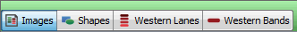

After you apply a filter, only entries that meet the filtering criteria are visible in the Table section. When a filter is applied, a small icon will appear at the bottom of the application window (). Click on the icon to display the Review Filters dialog where all currently applied filters are listed.
Filters are preserved when you save and exit Image Studio Software. The next time you open Image Studio Software, the filtering definitions you applied in the previous session are used.
Select the Table to display by clicking the appropriate tab at the top left of the Table section.

Select Display Current in the Filter list to display only the table entries for the currently selected Image Acquisition. Display Current is unavailable when the Images Table is displayed.
Select Display Filtered in the Filter list to display only the table entries in the filter. Display Filtered is unavailable when no filter is defined.
NOTE: Check marks indicate the filters that are currently defined. Multiple active filters are logically added together — the rows displayed are the intersection of the rows that are displayed by each of the filters individually.
Click Selection to display only the currently selected rows in the table.
Click Clear Selection to remove the Selection filter but leave other defined filters in place.
Click Clear All to remove all existing filters so that a new filter (or set of filters) can be created.
Click Review to display a list of all filters currently applied in the table. You can also click the icon () at the bottom of the application window to open the Review Filters dialog where all filters currently applied are listed.
{kind=link}
{kind=link}
{kind=link}